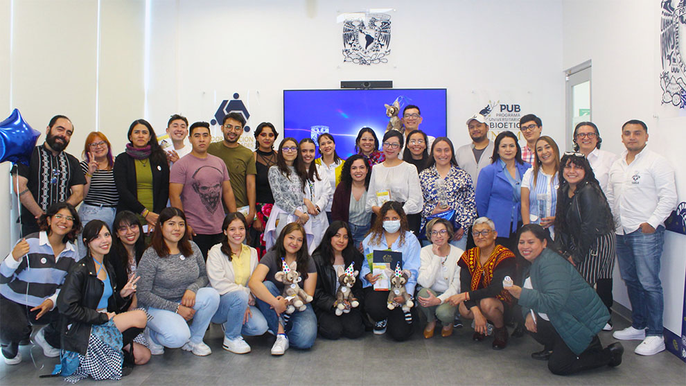
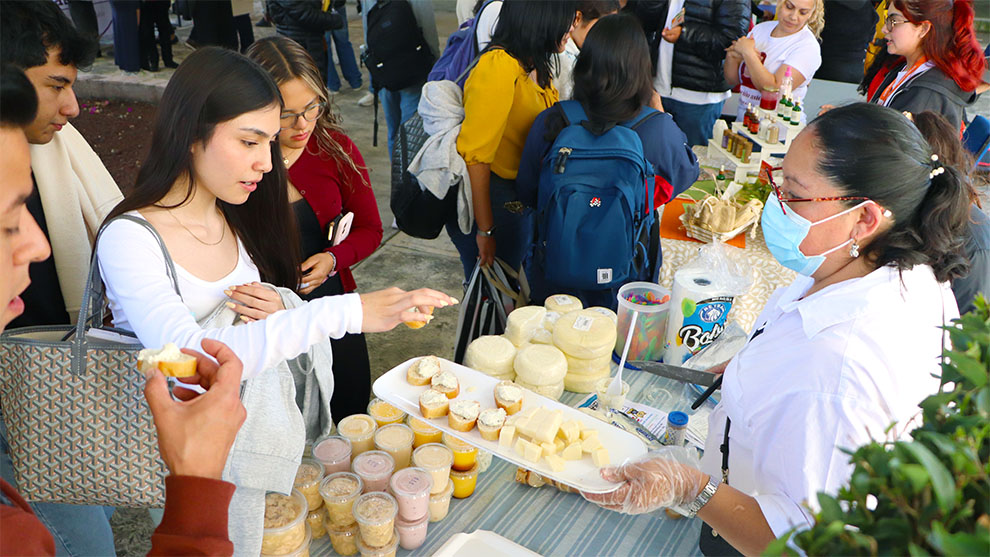

Académico
La sección de Academia reúne los avances, proyectos e investigaciones que impulsan el conocimiento dentro de la Universidad Nacional Autónoma de México. Aquí se destacan los logros de estudiantes, profesores y centros de investigación que contribuyen al desarrollo científico, tecnológico y humanístico del país.
La calidad, base de la ciencia y la enseñanza
Veinte aniversario de las primeras certificaciones ISO 9001 en la Universidad.
Leer más

Bioética celebra 13 años de trayectoria
El programa ha fortalecido el debate ético en la práctica científica y académica dentro de la Universidad.
Leer más

Dan impulso a la creatividad, innovación y visión empresarial
Empecemos a despertar el interés en los estudiantes para que viertan sus ideas y las concreten: David Quintanar.
Leer más